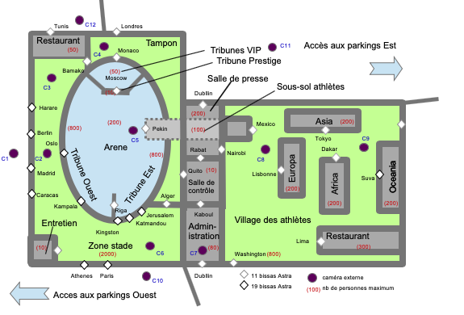
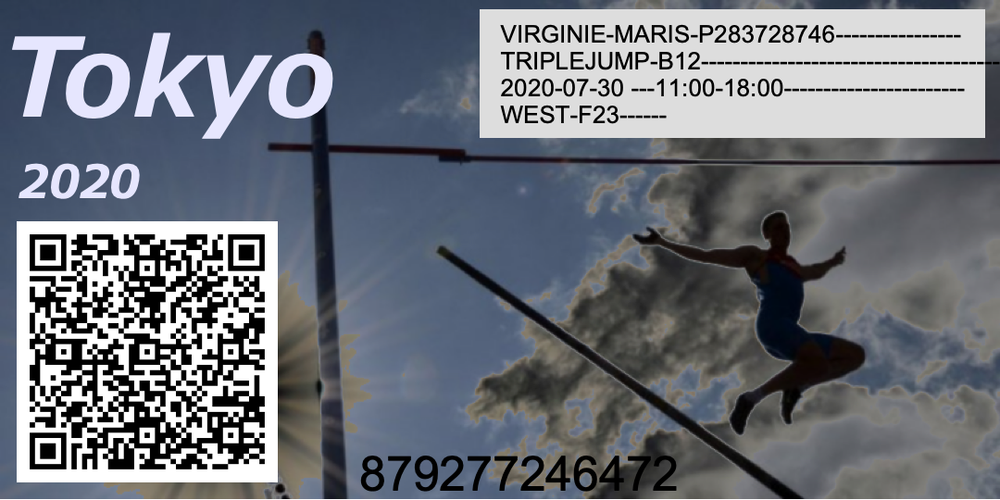
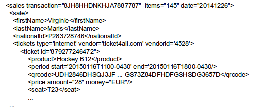

CR002 Réunion iAcces pour le stade Kasumigaoka de Tokyo¶
- Date
01-05 08h-22h
- Type
Reunion
- Lieu
Tokyo
- PartiesPrenantes
ABI, JDR, PSO, AGO
- Organisateur
ABI
- Rapporteur
KWG
- Presents
ABI, JDR, PSO, AGO
- Objectifs
Attentes pour le stade Kasumigaoka de Tokyo
Attention
Ce compte rendu est un document de travail et n’est pas contractuel.
- Nouvel intervenant :
Apito GUARACARUMBO (AGO) - Competis, Tokyo
La réunion a eu lieu sur le site du stade Kasumigaoka de Tokyo (新国立霞ヶ丘競技場) guidé par AGO.
Le stade a été détruit et est actuellement reconstruit à neuf pour les jeux olympiques d’été de 2020.
Son accès doit être sécurisé.
Grâce aux bissas, cette installation a été considérée comme viable par AccessIT.
AccessIT et Bissis seront les seuls à pouvoir équiper des sites avec des bissas.
Un plan des installations a été fourni par Competis.
A partir de la visite du site et de ce plan, un premier plan sécurité a été établi.
Les différents points d’accès et le nombre des bissas a été déterminé par AccessIT.
De même pour le positionnement des caméras et de la salle de contrôle.
Fig. 1 : Le nouveau stade Kasumigaoka¶
Les différentes zones du site ont été représentées sur le plan sécurité.
Par contre les bâtiments, installations et autres espaces non sécurisés n’y sont pas.
De même pour les entrées de véhicules et autres entrées gérées par des vigiles.
Les différents types de bissas ont été choisis en fonction du niveau de sécurité à atteindre.
Il est rappelé qu’une présentation des bissas aura lieu à Berlin - Bissis.
Différents groupes de personnes autorisées devront être définis.
Par exemple les spectateurs auront des billets papier.
Ils ne pourront accéder qu’à la tribune correspondant à leur billet.
Cette autorisation n’est valide que pour la période correspondant à l’épreuve du billet.
Un exemple de billet a été fourni par Competis et reproduit ci-dessous.
Fig. 2 : Exemple de billet faisant office de badge grâce au QR code¶
Pendant les jeux olympiques, les athlètes accéderont au village sportif, au restaurant, et à leur bâtiment.
Ils pourront aussi aller en salle de presse et à l’administration de 8h à 17h.
Par contre l’accès au sous-sol sportif et à l’arène ne leur sera pas autorisé tout le temps.
Ce sera uniquement le cas si une épreuve de leur discipline est en cours.
Différents autres groupes de badgeurs ont été évoqués dans ce cas d’étude.
Par exemple les administratifs et les journalistes ont chacun leurs zones.
Comme sur tous les sites, les gardiens peuvent aller dans toutes les zones dont la salle de contrôle.
Ils peuvent depuis leur smartphone débloquer l’accès ou la sortie d’une personne bloquée suite à un incident.
Même si différents groupes de badgeurs ont été identifiés, d’autres pourraient apparaître.
Un superviseur unique par site pourra créer des administrateurs pour ces groupes. Il leur donnera des droits sur la gestion d’une ou plusieurs zones.
Chaque groupe d’un site sera alors créé et géré par un administrateur et pas par le superviseur.
Par exemple les administrateurs des sportifs pourront éditer leurs badges et définir les zones auxquelles ils ont accès et à quels moments.
Les administrateurs de presse s’occuperont des badges des journalistes, etc.
Bien entendu les administrateurs de groupe ne pourront pas donner à un groupe l’accès à des zones dont il n’est pas chargé.
Les badges papiers pour les spectateurs seront émis par un système en ligne.
Dans une telle compétition, on attend en effet environ 100 000 spectateurs.
Plus de 400 000 billets seront sans doute émis (mais pas forcément utilisés).
Le système en ligne CyberCompetition (par Competis) sera en charge de l’émission des billets.
Pour les spectateurs les badges prendront la forme de QR codes sur leurs billets papiers (cf. CR002Fig2)
De façon générale des logiciels externes (e.g. CyberCompetition) devront pouvoir gérer les membres d’un groupe, comme ajouter des spectateurs à des compétitions pour lesquels des billets ont été émis par CyberCompetition.
Pour la transmission par un logiciel à iAccess des informations de gestion d’un groupe, seules certaines informations seront nécessaires
Il a été convenu qu’un format XML soit utilisé dans ce cadre.
Le fichier d’exemple ci-dessous a été fourni par Competis.
Fig. 3 : Exemple de fichier généré par Competis - Exemple Competis 01_05¶
La transmission des données entre CyberCompetition et iAccess devra se faire via un web service sécurisé.
En conclusion, les besoins du stade olympique de Tokyo sont tout à fait pertinents pour iAccess.
AccessIT confirme son intérêt de développer une version de iAccess pour ce site.
Cette version sera la première développée et sa conception sera faite au plus vite par l’IM2AG.